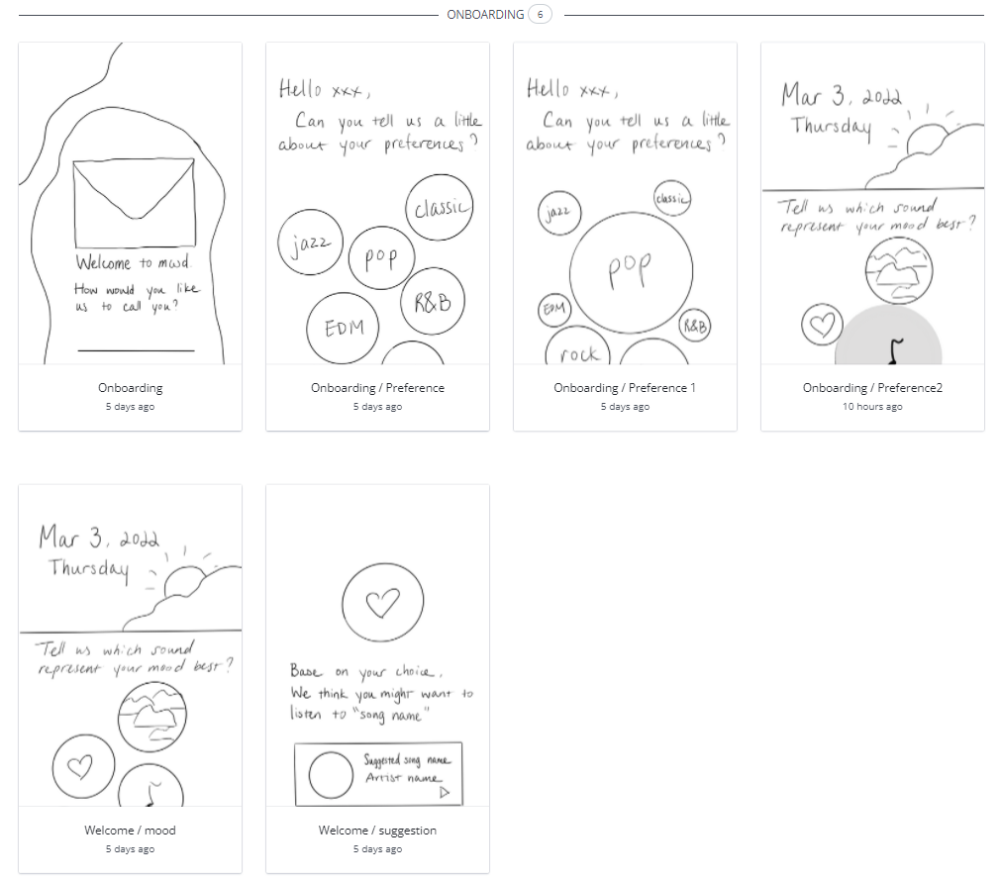
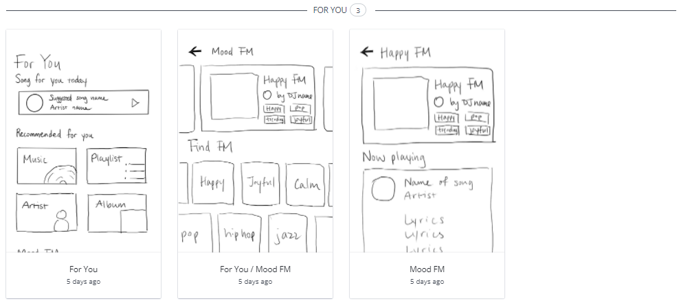
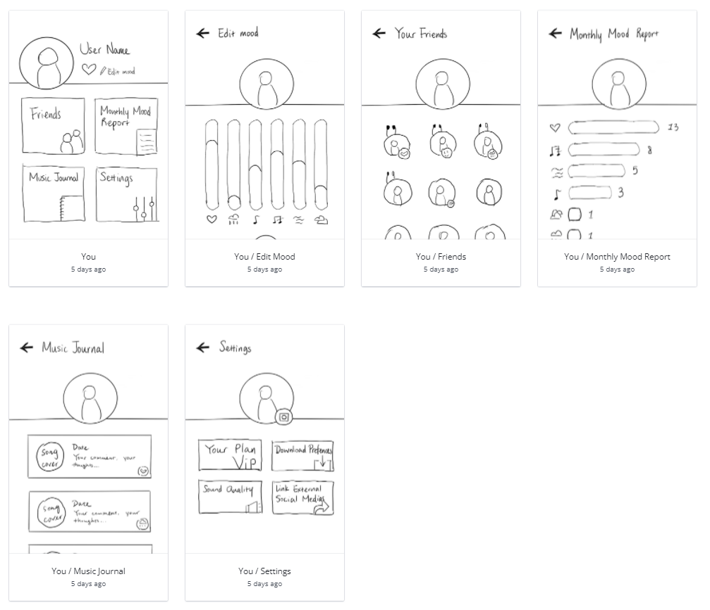
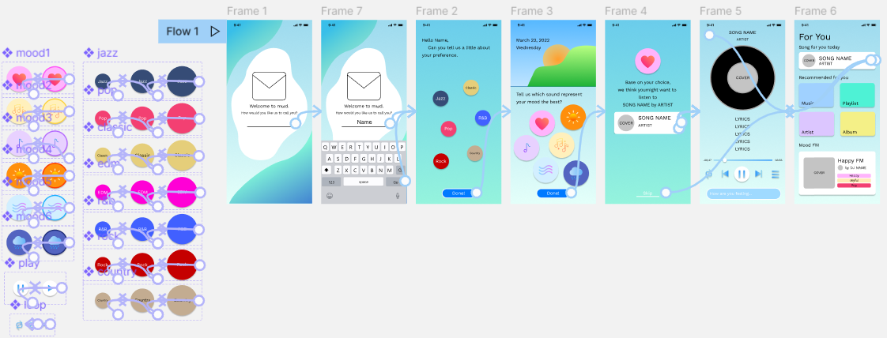

In this project, me and my three other teammates, Gonçalo Jorge do Monte, Juliana Serna Mesa, and Skylar Wang are designing a mood-based music app.
We decided to name it "mωd", which is from "muud". We replaced o in the word mood by u for music.Then we used "ω" to make the word look like a smiley face, which can also represent our core of "mood-based".
We did research and learned from existing music streaming service, found competitors, and acknowledge what users want.
According to Midia, the music streaming market is continuing to grow, and increased by 26.4 percent in 2021. There’s high growth potential among the Gen Z. Spotify is the one dominating the market right now, with 31% of market share, with Apple Music and YouTube Music growing fast. The top 5 major music streaming services are Spotify, Apple Music, Amazon Music, Tencent Music, and YouTube Music. Their brand positioning target different audience segments from Gen X to Gen Z.
In terms of Spotify, there is a difference between the user with the free account and a premium account, since most streaming services don't offer free-tiers. Spotify places itself as an “audio company”, they aren't just a music streaming service but they also offer podcasts, and soon Audiobook.
Apple Music is a streaming service much more focused on music and artists but also giving the user interesting related content such as interviews and radio shows hosted by artists.
The consumption of music is done in the majority through streaming services, but the consumption of physical copies has been growing. Artists like Adele and Taylor Swift move a lot of people that end up buying the physical copies of their albums, instead of just listening to them on streaming. Since Gen Z has been responsible for the growth of Vinyl sales. The UGC (User generated content) is also the trend. NetEase Music and SoundCloud are highly based on user uploaded music, while users of other platform create playlists to share with others, like Apple Music “friend mix”.
We brain stormed with a Affinity Map, and created user personas based on insights we got from the User Interviews.
We also created an app map. Following the app map, we each sketched a part of the app, and later I re drew all of them to unify the style for user testing.
  Here are some unique features of our app, for example, choosing mood of the day, editing mood, and monthly mood report.


I also made a Hi-Fi prototype with Figma of our most unique onboarding process.
